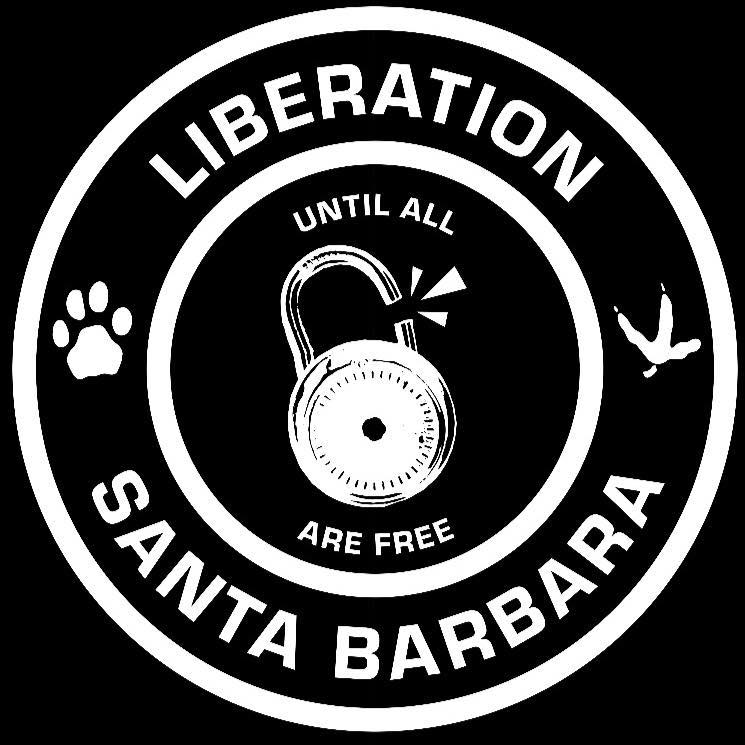

UPCOMING EVENTS:
When: August 11, 2018, 6pm to 8pm
Where: Paseo Nuevo Mall in front Banana Republic at 735 State St.
What: Showing videos from animal agriculture to the public, leafletting, discourse, educational outreach.
When: August 11, 2018, 6pm to 8pm
Where: Paseo Nuevo Mall in front Banana Republic at 735 State St.
What: Showing videos from animal agriculture to the public, leafletting, discourse, educational outreach.
Liberation refers to freedom from legal and social discrimination and oppression, superficially granted in the form of basic legal rights. While liberation has still not been achieved for marginalized human communities around the world, few people dispute the claim that every human being is entitled to basic legal protections.
Animal Liberation extends this uncontroversial point to nonhuman animals. Just as humans have and continue to wrongly oppress other humans based on race, gender, class, sexual orientation, or ability, they also oppress nonhuman on the basis of species membership. Discrimination against others on the basis of species membership alone is called speciesism.
Animal Liberation rejects speciesism and refers to nonhuman animals’ future liberation from discrimination and oppression, including but not limited to legal protections.
Liberation Santa Barbara believes in the value and efficacy of nonviolent direct action, employing both confrontational and non-confrontational techniques to fight for animal liberation. Nonviolence is not pacifism, so while LSB refuses to engage in any forms of physical violence towards those who profit from and participate in animal exploitation, LSB also refuses to remain silent and back down in the presence of injustice. In the spirit of Martin Lurther King, Jr.,
“Direct action is the strategic use of nonviolent tactics and methods to bring an opponent or oppressive party into dialogue to resolve an unjust situation. It is used as a moral force to illustrate, document and counter injustices. The techniques and tactics for direct action include rallies, letter-writing campaigns, vigils, petitions, fasts, walks and marches, civil disobedience and boycotts.”
Veganism is a way of living that excludes, as far as is practicable, all use and consumption of animals and animal products. As an anti-speciesist organization striving for animal liberation, Liberation Santa Barbara firmly believes that the human use of nonhuman animals for food, labor, transportation, recreation, and medical science is in direct conflict with basic principles of justice. No sentient being is the property of another.
Liberation Santa Barbara is a 100% grassroots, volunteer organization composed of people from the local Santa Barbara community. We are your neighbors, friends, students, and coworkers, your fellow commuters and beachgoers. Members of LSB recognize animal exploitation as an urgent social justice issue demanding not only our attention but also action, no different than any human justice issue.
Liberation Santa Barbara is a chapter of the Liberation Collective network, a nonhierarchical, decentralized community of animal rights activists.